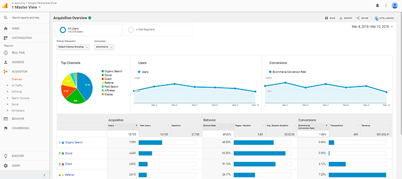

Un site web, c’est un élément indispensable dans votre communication online vous diront la majorité des agences. Chez Animatic, on n'est pas forcément d’accord. La plupart des sites internet n’ont aucune utilité et ne vous apportent pas un seul centime (ni même un prospect). Même bien référencé sur Google certains perdent des milliers d’euros sur la création d’un site web avec une stratégie complexe. Pour ne pas tomber dans ce piège et éviter de perdre de l’argent, Ludovic, notre spécialiste d’acquisition de trafic et marketing vous explique tout aujourd’hui !
Créer un site internet c’est bien. Mais le plus important reste la façon dont on met en avant l’entreprise. Quelle est notre cible, quel est le but unique du site ou encore pourquoi les visiteurs devraient venir sur notre site ? Trop de questions que peu de monde se pose lors de sa création. L’important sur le site n'est pas la technologie utilisée mais ces questions. Dans le cas des startup ou des entreprises avec des concepts innovants de manière générale, il faut savoir s’il y a un réel intérêt de la cible. Un élément important c’est le canal d’acquisition. Il faut penser le site web comme un discours de vente automatisé mais il faut amener des visiteurs. On peut utiliser des stratégies comme le référencement, la publicité sur Google (Google Ads) ou encore les moyens organiques comme Facebook et Instagram.

Bon, je vous ai peut-être un peu survendu la chose. Les secrets sont simples. Du contenu adapté, la mise en place de CTA (appel à l’action précis) et l'obsession de l’expérience utilisateur. C’est la combinaison de ces différents éléments et évidemment d’une stratégie d’acquisition et de conversion complète qui fait la réussite d’un site web. Ce qui fait que 2 écoles d’une même ville avec un site web font 0 euro pour une et plus de 50 000 euros par ans pour l’autre. Un dernier conseil : apportez le maximum de valeur !
Après avoir passé de 0 à 1 une fois votre site web créé, on va chercher à passer de 1 à 100. L’une des clés pour faire performer son site web c’est la mesure et la prise de décision. Personnellement je vous conseil 2 outils assez puissants que sont Google Analytics et Hotjar. Le premier va vous permettre d’avoir les données clés sur votre site web comme le taux de rebond ou encore la durée moyenne des sessions. Le Second, Hotjar va vous permettre de connaître les “zones chaudes” de votre site et d’analyser le parcours utilisateur. C’est la mesure et l’optimisation de votre site web qui va vous permettre d’avoir un outil d'acquisition parfait !
La mise en place d’un site web demande énormément de réflexion. Cela va bien au delà du simple template wordpress avec quelques informations. La création du site web demande une véritable expertise. Non pas une expertise en matière de code car avec l'apparition des plateformes types wix cela devient de plus en plus facile mais une expertise en matière de parcours utilisateur et d’expérience. La clé c’est l’analyse et la stratégie, pour ce faire nous vous invitons à nous contacter afin de prendre rendez-vous, pour vous donner toutes les clés du site web rentable et le plan d’action étape par étape pour performer avec votre site.